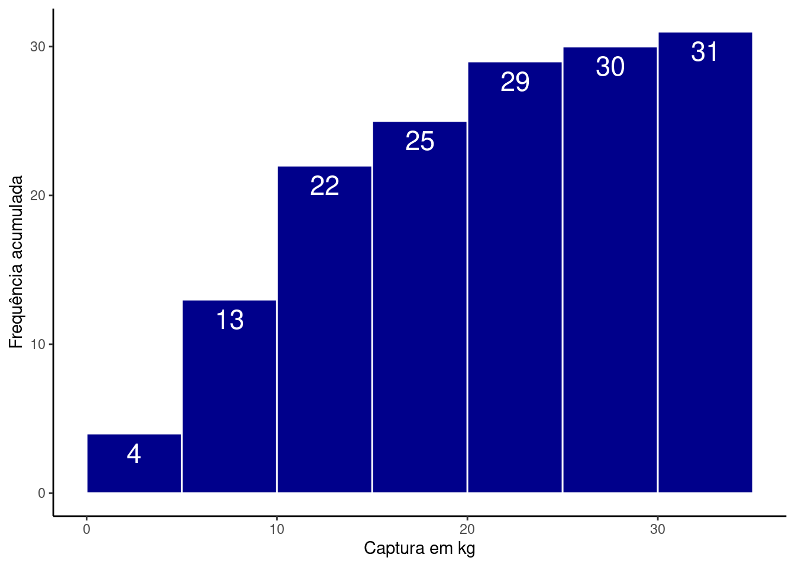

library(tidyverse)
library(flextable)4 Descrevendo variáveis quantitativas
Pacotes e funções utilizadas no capítulo
Variáveis quantitativas podem ser discretas ou contínuas. A descrição dos padrões de distribuição para esses tipos de variáveis é feita utilizando tabelas (frequência e frequência acumulada) e gráficos (histogramas ou gráficos de frequência acumulada).
4.1 Tabelas de frequência para variáveis quantitativas
A construção de tabelas de frequências para variáveis quantitativas necessita que agrupemos as observações em faixas de valores. Veja as observações abaixo por exemplo:
\(X =\) {2.66, 3.72, 5.73, 9.08, 2.02, 8.98, 9.45, 6.61, 6.29, 0.62}
Podemos agrupá-las nas seguintes faixas de valores:
(0,2], (2,4], (4,6], (6,8], (8,10]
Estas faixas de valores são denominadas de intervalos de classe. Se alocadas nestes intervalos, as observações ficam:
X = c(2.66, 3.72, 5.73, 9.08, 2.02, 8.98, 9.45, 6.61, 6.29, 0.62)
Classes = cut(X, seq(0, 10, by = 2))
df = data.frame(X, Classes)
df %>%
flextable()X | Classes |
2.66 | (2,4] |
3.72 | (2,4] |
5.73 | (4,6] |
9.08 | (8,10] |
2.02 | (2,4] |
8.98 | (8,10] |
9.45 | (8,10] |
6.61 | (6,8] |
6.29 | (6,8] |
0.62 | (0,2] |
Uma tabela de frequência para estas observações é construínda contando o número de observações por intervalo de classes. Neste caso:
df %>%
group_by(Classes) %>%
summarise(Frequencia = n()) %>%
flextable()Classes | Frequencia |
(0,2] | 1 |
(2,4] | 3 |
(4,6] | 1 |
(6,8] | 2 |
(8,10] | 3 |
Na coluna Frequencia temos o número de observações da variável X para cada um dos intervalos de classe.
4.1.1 Alterando o tamanho dos intervalos de classe
No exemplo anterior definimos os limites dos intervalos de classe de 2 em 2 unidades. Poderíamos ter escolhido outros tamanhos, por exemplo, de 4 em 4. Neste caso teríamos:
Classes = cut(X, seq(0, 12, by = 4))
data.frame(X, Classes) %>%
group_by(Classes) %>%
summarise(Frequencia = n()) %>%
flextable()Classes | Frequencia |
(0,4] | 4 |
(4,8] | 3 |
(8,12] | 3 |
Note que ao escolhermos o tamanho dos intervalos de classe, estamos criando a variável qualitativa ordinal Classes, a partir do agrupamento das observações em X. Neste sentido, não há um único tamanho correto para os intervalos de classe. O objetivo é encontrar um tamanho que permita evidenciar os padrões de distribuição da variável sem perdermos muitos detalhes.
Poderíamos escolher um tamanho muito grande, de 5 em 5. Neste caso teríamos somente 2 grupos.
Classes = cut(X, seq(0, 10, by = 5))
data.frame(X, Classes) %>%
group_by(Classes) %>%
summarise(Frequencia = n()) %>%
flextable()Classes | Frequencia |
(0,5] | 4 |
(5,10] | 6 |
Por outro lado, poderíamos escolher um tamanho muito pequeno, por exemplo de 1 e 1.
Classes = cut(X, seq(0, 10, by = 1))
data.frame(X, Classes) %>%
group_by(Classes) %>%
summarise(Frequencia = n()) %>%
flextable()Classes | Frequencia |
(0,1] | 1 |
(2,3] | 2 |
(3,4] | 1 |
(5,6] | 1 |
(6,7] | 2 |
(8,9] | 1 |
(9,10] | 2 |
Nas duas situações, não é possível evidenciar os padrões de distribuição da variável X. Na primeira, perdemos muita informação agrupando as observações em somente duas faixas e na última, perdemos a capacidade de visualizar os padrões de distribuição de X.
4.1.2 Tabela de frequência para a CPUE
Importe a base de dados Reservatorios_Parana_parcial.csv.
res = read_delim('Reservatorios_Parana_parcial.csv',
delim = ',',
locale = locale(decimal_mark = '.',
encoding = 'latin1'))No objeto res temos 8 variáveis quantitativas: Fechamento, Area, pH, Condutividade, Alcalinidade, P.total, Riqueza, CPUE. Vamos verificar a como fica uma tabela de frequências para a variável CPUE que expressa a captura em \(kg\) de peixes em cada reservatório. Inicialmente, vamos selecionar somente esta coluna da tabela e visualizá-la em ordem crescente.
res %>%
select(CPUE) %>%
arrange(CPUE) %>%
flextable()CPUE |
2.05 |
2.43 |
4.01 |
4.71 |
5.60 |
5.95 |
6.29 |
7.35 |
7.51 |
7.75 |
7.95 |
9.22 |
9.40 |
11.59 |
11.73 |
11.74 |
12.55 |
13.04 |
13.12 |
13.67 |
13.72 |
13.86 |
16.10 |
16.50 |
17.95 |
20.83 |
20.92 |
21.82 |
24.88 |
28.73 |
30.76 |
Vemos que o menor valor é 2.05 \(kg\) e o maior 30.76 \(kg\). Assumindo que temos 31 observações, vamos criar um intervalo de classes de 5 em 5 unidades. Para isto, criaremos a variável cl_cpue que será uma sequência de \(0\) a \(35\), com tamanho \(5\). Os valores nesta sequencia são os limites de classe
cl_cpue = seq(from = 0, to = 35, by = 5)
cl_cpue[1] 0 5 10 15 20 25 30 35Utilizaremos os limites de classe para gerar uma nova coluna, delimitando os intervalos a que cada observação pertence. para isto utilizaremos a função cut.
tab_cpue = res %>%
select(CPUE) %>%
mutate(int_cpue = cut(CPUE, breaks = cl_cpue))E veremos a tabela em ordem crescente de classes para facilitar a dentificação de padrões.
tab_cpue %>%
arrange(CPUE) %>%
flextable()CPUE | int_cpue |
2.05 | (0,5] |
2.43 | (0,5] |
4.01 | (0,5] |
4.71 | (0,5] |
5.60 | (5,10] |
5.95 | (5,10] |
6.29 | (5,10] |
7.35 | (5,10] |
7.51 | (5,10] |
7.75 | (5,10] |
7.95 | (5,10] |
9.22 | (5,10] |
9.40 | (5,10] |
11.59 | (10,15] |
11.73 | (10,15] |
11.74 | (10,15] |
12.55 | (10,15] |
13.04 | (10,15] |
13.12 | (10,15] |
13.67 | (10,15] |
13.72 | (10,15] |
13.86 | (10,15] |
16.10 | (15,20] |
16.50 | (15,20] |
17.95 | (15,20] |
20.83 | (20,25] |
20.92 | (20,25] |
21.82 | (20,25] |
24.88 | (20,25] |
28.73 | (25,30] |
30.76 | (30,35] |
A nova tabela tab_cpue tem agora duas colunas, os valores numéricos de CPUE e os valores transformados em intervalos de classe, int_cpue. É com esta última que montaremos a tabela de frequência.
fre_cpue = tab_cpue %>%
group_by(int_cpue) %>%
summarise(Frequencia = n())
fre_cpue %>%
flextable()int_cpue | Frequencia |
(0,5] | 4 |
(5,10] | 9 |
(10,15] | 9 |
(15,20] | 3 |
(20,25] | 4 |
(25,30] | 1 |
(30,35] | 1 |
e, em seguida de frequência relativa:
fre_cpue = fre_cpue %>%
mutate(Freq_relativa = Frequencia / sum(Frequencia))
fre_cpue %>%
flextable()int_cpue | Frequencia | Freq_relativa |
(0,5] | 4 | 0.12903226 |
(5,10] | 9 | 0.29032258 |
(10,15] | 9 | 0.29032258 |
(15,20] | 3 | 0.09677419 |
(20,25] | 4 | 0.12903226 |
(25,30] | 1 | 0.03225806 |
(30,35] | 1 | 0.03225806 |
Veja que os intervalos de (5,10] e (10,15] contém o maior número de observações, cerca de 29% cada um, e que acima de \(25\) \(kg\) temos somente duas observações.
4.1.3 Tabela de frequência acumulada
Outra forma de representar o padrão de distribuição para uma variável quantitativa é apresentá-la em uma tabela de frequência acumulada. Fazemos isso, somando de forma cumulativa as observações em cada classe de intervalo e criando duas colunas adicionais de frequência acumulada e de frequência relativa acumulada.
fre_cpue = fre_cpue %>%
mutate(Freq_ac = cumsum(Frequencia),
Relativa_ac = cumsum(Freq_relativa))
fre_cpue %>%
flextable()int_cpue | Frequencia | Freq_relativa | Freq_ac | Relativa_ac |
(0,5] | 4 | 0.12903226 | 4 | 0.1290323 |
(5,10] | 9 | 0.29032258 | 13 | 0.4193548 |
(10,15] | 9 | 0.29032258 | 22 | 0.7096774 |
(15,20] | 3 | 0.09677419 | 25 | 0.8064516 |
(20,25] | 4 | 0.12903226 | 29 | 0.9354839 |
(25,30] | 1 | 0.03225806 | 30 | 0.9677419 |
(30,35] | 1 | 0.03225806 | 31 | 1.0000000 |
Veja agora que a última linha da coluna de frequência acumulada é igual ao número de observações total e que a da frequência relativa acumulada é igual a .
4.2 Representação gráfica: histogramas
Histogramas são regresentações das tabelas de frequência e de frequência relativa. Um histograma da coluna CPUE pode ser feito com o comando:
ggplot(res, aes(x = CPUE)) +
geom_histogram()
Os intervalos de classe foram escolhidos automaticamente pela função geom_histogram. Se quisermos ter o controle sobre estes intervalos, podemos adicionar o argumento beaks e a sequência com os limites de classe que criamos anteriormente:
ggplot(res, aes(x = CPUE)) +
geom_histogram(breaks = cl_cpue)A formatação do histograma acima pode ser melhorada de diversas formas, por exemplo:
ggplot(res, aes(x = CPUE, label = ..count..)) +
geom_histogram(breaks = cl_cpue,
fill = 'darkblue', color = 'white') +
labs(x = 'Captura em kg', y = 'Frequência') +
geom_text(stat = "bin", size = 6, vjust = 1.5, color = 'white',
breaks = cl_cpue) +
theme_classic()Modificamos a cor do preenchimento (
fill = 'darkblue'), e identificamos as barras individualmente traçando uma linha branca entre elas (color = 'white');Re-escrevemos o rótulo dos eixos \(x\) e \(y\) (
labs());identificamos as frequências em cada barra individualmente com o argumento
label = ..count..e a funçãogeom_text. Experimente alterar os argumentos dentro degeom_textpara entender cada um deles.modificamos o tema do gráfico para obter uma alteração geral na aparência da figura. Existem diversos outros temas possíveis que podem ser vistos aqui.
Um histograma com a frequência relativa pode ser obtido com:
ggplot(res, aes(x = CPUE,
y = (..count..)/sum(..count..),
label = round((..count..)/sum(..count..),2))) +
geom_histogram(breaks = cl_cpue,
fill = 'darkblue', color = 'white') +
labs(x = 'Captura em kg', y = 'Frequência relativa') +
geom_text(stat = "bin", size = 6, vjust = 1.5, color = 'white',
breaks = cl_cpue) +
theme_classic()Aqui fizemos duas mudanças:
inserimos o argumento
y = (..count..)/sum(..count..)para dizer que as barras em \(y\) devem mostrar a contagem do número de observações em cada intervalo dividido pelo total.modificamos o argumento
label = round((..count..)/sum(..count..),2)de modo que também mostre a frequência relativa. Neste argumento, entretanto, tivemos que utilizar uma função de arredondamentoround(__, 2)para dizer que os nomes abaixo das barras deveria ser mostrados somente com duas casas decimais.Modificamos o nome do eixo \(y\) para
y = 'Frequência relativa'.
4.2.1 Representando frequências acumuladas
A única modificação neste caso, será identificarmos o eixo \(y\) por sua contagem acumulada: y = cumsum(..count..).
ggplot(res, aes(x = CPUE,
y = cumsum(..count..),
label = round(cumsum(..count..),2))) +
geom_histogram(breaks = cl_cpue,
fill = 'darkblue', color = 'white') +
labs(x = 'Captura em kg', y = 'Frequência acumulada') +
geom_text(stat = "bin", size = 6, vjust = 1.5, color = 'white',
breaks = cl_cpue) +
theme_classic()
Para fazer o mesmo mostrando as frequências relativas fazemos:
ggplot(res, aes(x = CPUE,
y = cumsum(..count../sum(..count..)),
label = round(cumsum(..count../sum(..count..)),2))) +
geom_histogram(breaks = cl_cpue,
fill = 'darkblue', color = 'white') +
labs(x = 'Captura em kg', y = 'Frequência acumulada relativa') +
geom_text(stat = "bin", size = 6, vjust = 1.5, color = 'white',
breaks = cl_cpue) +
theme_classic()